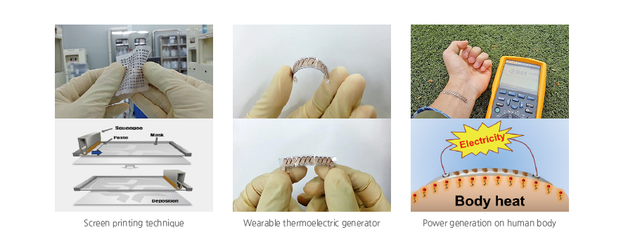

주제별 연구성과
주제별 연구성과
KAIST RESEARCH ACHIEVEMENTS
체온으로 전기를 생산하는 소자
전기및전자공학부 조병진
요약
머지않은 미래에 사물인터넷(IOT, Internet Of Things)시대가 열릴 것이다. 이 때에 가장 중요한 요소기술은 센서이며, 각 사람들은 수많은 센서를 몸에 지니고 다니면서 주변 사물과 통신을 하게 될 것이다. 이러한 여러 가지 센서들의 구동을 위해서 일일이 충전을 하는 것은 대단히 번거로운 일이며 실용화의 걸림돌이 되므로, 에너지 하베스팅 기술을 이용하여 self-powered system 으로 구현할 경우 본격적인 IOT시대가 열릴 것이다.
연구내용
IOT 시대의 self-powered sensor 시스템을 구현하기 위해서는 energy harvesting 기술과 센서네트웍이 결합이 되어야 한다. 만일, 체열을 전기에너지로 전환할 수 있다면,언제 어디서나 몸에 부착된 센서들을 작동시킬 수 있어 이상적인 시스템이 될 것이다. 열을 전기로 전환하는 것은 열전소자를 사용하면 되나, 기존의 상용열전소자는 단단하고 무겁기 때문에 몸에 착용할 수 없어, 착용가능한 형태의 열전소자를 개발하는 연구가 반드시 필요하다.
기존 상용열전소자는 단단하고 무거운 세라믹 기판을 포함하는데, 이는 소자의 유연성뿐만 아니라 열에너지손실을 발생시켜 에너지 변환효율을 저해하는 요소가 된다. 본 연구에서는 가볍고 유연한 유리섬유 상에 열전소자를 최초로 구현함으로써 기판으로 인해 발생하는 열손실 문제를 획기적으로 개선하고 고출력이면서도 입을 수 있는 유연 열전소자를 개발하였다. 본 연구에서 개발된 열전 소자의 중량은 0.13g/cm2로 상용소자보다 10배 정도 가볍다.
 그림 1. 본 연구에서 개발한 입을 수 있는 열전소자는 미래기술의 하나인 웨어러블 센서들의 전력공급원으로써 활용이 가능할 것으로 판단된다. 뿐만 아니라, 자동차, 발전소,항공기, 선박 등 폐열이 발생하는 다양한 곳에 본 기술을 적용할 수 있기 때문에 그 활용범위가 매우 넓어 기술적·경제적 파급효과가 매우 클 것으로 기대된다.
연구실적
ㆍ논문: "A wearable thermoelectric generator fabricated on a glass fabric", Energy & Environmental Science(impact factor: 15.49), 7, 1959-1965, 2014
ㆍ특허: "메쉬형 기판을 이용한 플랙시블 열전소자 및 그 제조방법", 국내 특허등록(10-1493797), PCT, 미국, 일본, 중국, 유럽 특허출원
ㆍ언론보도: ABC news, Discovery channel, Daily, Yahoo, CNET 등 전 세계 각국 100여 군데 이상의 메이저 언론들에 보도, 국내에서는 MBC NewsDesk 저녁 메인 뉴스, YTN TV 뉴스, 연합뉴스 속보 및 거의 모든 일간지에 보도
ㆍUNESCO-Netexplo Award 2015 그랑프리 수상
ㆍ기술의 상용화를 위하여 교원창업 기업 TEGway(주)를 창업, SK 텔레콤 벤처기업 공모전 우수기업 선정 및 표창, 대전 창조경제 혁신 센터의 Dream Venture Star 기업으로 선정
연구지원
ㆍ미래창조과학부(기반형 융합연구사업)
ㆍKAIST(KAIST End Run Project)